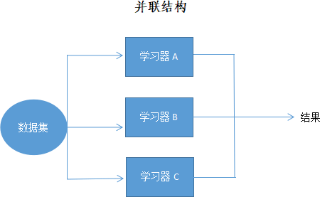
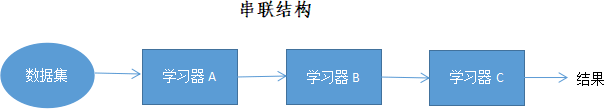

什么是集成学习算法
经过前面的学习，我们认识了机器学习中的常用回归算法、分类算法和聚类算法，在众多的算法中，除神经网络算法之外，没有一款算法模型预测准确率达到 100%，因此如何提高预测模型的准确率成为业界研究的重点。通过前面内容的学习，你可能会迅速想到一些方法，比如选择一款适合的算法，然后反复调整各种参数，其实这并不是最佳的方法，有以下三点原因：
那到底有没有一种适合的方法呢？当然有，它就是本节要介绍的主角——集成学习方法（Ensemble Method），或称集成学习算法。
准确来讲，集成学习算法并非一种机器学习算法，它更像是一种模型优化方法，是一种能在各种机器学习任务上提高准确率的强有力技术，这种技术的关键体现在“集成”两个字上，所谓集成就是“捏在一起”，因此集成学习算法可以理解成是一套组合了多种机器学习算法模型的框架，它关注的是框架内各个模型之间的组织关系，而非某个模型的具体内部结构。
可以说集成学习算法是“集”百家之长，使预测模型获得较高准确率，当然这也导致了模型的训练过程会稍加复杂，效率降低了一些，但在硬件性能发达的今天，几乎可以忽略不计。
当下深度学习大行其道，将任何一款传统机器学习算法单拎出来与之一较高下，几乎都会败下阵来，而集成学习算法的出现打破了这个平衡，它几乎能与深度学习平分秋色。在 Kaggle、天池等著名机器学习竞赛中，选手使用最多当属集成学习算法，而非 SVM、KNN 或者 Logistic 逻辑回归等单个算法，由此可见集成学习算法具有更广泛的适应场景，比如分类问题、回归问题、特征选取和异常点检测等各类机器学习任务。
集成学习最早出现于 1979 年，Dasarathy 提出了集成系统（Ensemble system） 的思想，他使用线性分类器和最近邻居分类器组成的复合模型进行训练，得到了比单个分类器训练更好的预测效果。
1988 年 Kearns 提出了“弱学习器”概念，引发了“能否用一组弱学习器创造一个强学习器”的广泛讨论。（学习器，指的是某种机器学习算法模型），注意，所谓弱学习器，指的是一个个单独的算法模型，比如 KNN 算法模型、线性回归模型、朴素贝叶斯等，而强学习器指的是由多个不同类别的“弱学习器”集成的学习器，也称“异质集成”，这类学习器的预测准确率在 90% 以上。除此之外，还有一种“基学习器”（也称同质集成），它是由同一款机器学习算法组成的。
1990 年 Schapire 对这问题给出了答案，并且研发了著名的 Boosting 算法，该算法是集成学习常用方法之一；1992 年 Wolpert 首次提出“堆叠泛化”这一概念，即“堆叠”弱学习器训练的模型比任何单个弱学习器训练的模型具有更好的性能。
1996年，Breiman 开发了另一个集成学习方法 —— Bagging 算法（也称装袋算法），并对其原理和训练过程进行了详细的描述，并明确指出 Bagging 算法能够提高预测的准确性。其后几年，Breiman 在 Bagging 算法的基础上对“随机决策森林”进行另外重新描述，提出了集成学习中最广为人知的算法 —— 随机森林算法（RandomForest），该算法通过集成学习的思想将多棵“决策树”集成为一片“森林”，使其兼顾了解决回归问题和分类问题的能力。
截止到目前，已经有越来越多的集成学习算法被提出，比如 2010 年 Kalal 等人提出的 P-N 学习，以及近几年提出的以堆叠方式构建的深度网络结构、XGBoost 等算法，它们都能显著提升模型的预测效果。
前面，我们介绍的机器算法都是“个人”的单打独斗，而集成学习是“团队协作”，大家可以集思广益。这种方式固然好，但是如果没有统一的协调，也很容易出现问题，比如一个开发团队遇到问题时，总能通过相互沟通很快地推举出一个擅长解决该问题的人。但机器学习算法是无法使用语言来沟通的，那怎样才能使集成学习发挥出团队威力呢？这就要通过集成学习的组织结构来解决这一问题。
总的来说，集成学习算法主要使用两种结构来管理模型与模型之间的关系，一种是并联，另一种是串联（这和物理上串联电路、并联电路似乎有些相似之处）。下面对这两种方式进行简单介绍（其实很好理解）。
简单多数投票法就是哪个预测结果占大多数，就把这个结果就作为最终的预测结果；绝对多数投票法就多了一个限制，这个“多数”必须达到半数，比如有共有 6 个学习器，得出同一预测结果的必须达到 3 个及以上，否则就拒绝进行预测。下面重点理解一下加权投票法。
加权投票法，有点类似加权平均，首先给不同的学习器分配权值，其次是查看哪个结果占大多数，注意，此处有一点儿不同，这里的“大多数”是权值相加后再比较得到的大多数，最后以得票最多的作为预测结果。
关于加权投票法举一个简单的例子，比如预测结果为 A 的有 3 个学习器，权值分别为 0.1、0.2 和 0.3，那么结果 A 的票数就为三者之和，即 0.6，而预测结果为 B 的只有 2 个学习器，但权值分别为 0.4 和 0.5，那么结果 B 的票数就为 0.9，也就是结果 B 的票数高于结果 A，最终预测结果就是结果 B。
通过放回重采样的方式来构建样本量相等、且相互独立的数据集，从而在同一算法中训练出不同的模型。Bagging 算法的集成策略比较简单，对于分类问题，一般通过投票法，以多数模型预测结果为最终结果；而对于回归问题，一般采用算术平均法，对所有模型的预测结果做算术平均得到最终结果。
Boosting 可以组合多个弱学习器来形成一个强学习器，从而在整体上提高模型预测的准确率。在模型训练过程中，Boosting 算法总是更加关注被错误分类的样本，首先对于第一个弱学习器预测发生错误的数据，在后续训练中提高其权值，而正确预测的数据则降低其权值，然后基于调整权值后的训练集来训练第二个学习器，如此重复进行，直到训练完成所有学习器，最终将所有弱学习器通过集成策略进行整合（比如加权法），生成一个强学习器。
Boosting 算法的训练过程是呈阶梯状的，后一个学习器会在前一个学习器的基础上进行学习，最终以某种方式进行综合，比如加权法，对所有模型的预测结果进行加权来产生最终的结果。
- 一是任何算法模型都有自身的局限性；
- 二是反复调参会浪费许多不必要的时间；
- 三是依靠调参来提升模型预测准确率具有很大的不确定性。
那到底有没有一种适合的方法呢？当然有，它就是本节要介绍的主角——集成学习方法（Ensemble Method），或称集成学习算法。
准确来讲，集成学习算法并非一种机器学习算法，它更像是一种模型优化方法，是一种能在各种机器学习任务上提高准确率的强有力技术，这种技术的关键体现在“集成”两个字上，所谓集成就是“捏在一起”，因此集成学习算法可以理解成是一套组合了多种机器学习算法模型的框架，它关注的是框架内各个模型之间的组织关系，而非某个模型的具体内部结构。
可以说集成学习算法是“集”百家之长，使预测模型获得较高准确率，当然这也导致了模型的训练过程会稍加复杂，效率降低了一些，但在硬件性能发达的今天，几乎可以忽略不计。
当下深度学习大行其道，将任何一款传统机器学习算法单拎出来与之一较高下，几乎都会败下阵来，而集成学习算法的出现打破了这个平衡，它几乎能与深度学习平分秋色。在 Kaggle、天池等著名机器学习竞赛中，选手使用最多当属集成学习算法，而非 SVM、KNN 或者 Logistic 逻辑回归等单个算法，由此可见集成学习算法具有更广泛的适应场景，比如分类问题、回归问题、特征选取和异常点检测等各类机器学习任务。
集成学习发展史
集成学习算法的理论、应用体系的构建与完善经历一个漫长的过程，下面进行简单地介绍。集成学习最早出现于 1979 年，Dasarathy 提出了集成系统（Ensemble system） 的思想，他使用线性分类器和最近邻居分类器组成的复合模型进行训练，得到了比单个分类器训练更好的预测效果。
1988 年 Kearns 提出了“弱学习器”概念，引发了“能否用一组弱学习器创造一个强学习器”的广泛讨论。（学习器，指的是某种机器学习算法模型），注意，所谓弱学习器，指的是一个个单独的算法模型，比如 KNN 算法模型、线性回归模型、朴素贝叶斯等，而强学习器指的是由多个不同类别的“弱学习器”集成的学习器，也称“异质集成”，这类学习器的预测准确率在 90% 以上。除此之外，还有一种“基学习器”（也称同质集成），它是由同一款机器学习算法组成的。
1990 年 Schapire 对这问题给出了答案，并且研发了著名的 Boosting 算法，该算法是集成学习常用方法之一；1992 年 Wolpert 首次提出“堆叠泛化”这一概念，即“堆叠”弱学习器训练的模型比任何单个弱学习器训练的模型具有更好的性能。
1996年，Breiman 开发了另一个集成学习方法 —— Bagging 算法（也称装袋算法），并对其原理和训练过程进行了详细的描述，并明确指出 Bagging 算法能够提高预测的准确性。其后几年，Breiman 在 Bagging 算法的基础上对“随机决策森林”进行另外重新描述，提出了集成学习中最广为人知的算法 —— 随机森林算法（RandomForest），该算法通过集成学习的思想将多棵“决策树”集成为一片“森林”，使其兼顾了解决回归问题和分类问题的能力。
截止到目前，已经有越来越多的集成学习算法被提出，比如 2010 年 Kalal 等人提出的 P-N 学习，以及近几年提出的以堆叠方式构建的深度网络结构、XGBoost 等算法，它们都能显著提升模型的预测效果。
集成学习组织方式
集成学习不是一种独立的机器学习算法，而是把互相没有关联的机器学习算法“集成”在一起，从而取得更好的效果。我们知道，每个算法模型都有各自的局限性，集成学习方式的出现正好弥补了这一不足之处，其实就算是大神也有“折戟沉沙”的时候，但人多力量大，多找几个大神凑在一起，就算遇到难题，最终也能比较好的解决。前面，我们介绍的机器算法都是“个人”的单打独斗，而集成学习是“团队协作”，大家可以集思广益。这种方式固然好，但是如果没有统一的协调，也很容易出现问题，比如一个开发团队遇到问题时，总能通过相互沟通很快地推举出一个擅长解决该问题的人。但机器学习算法是无法使用语言来沟通的，那怎样才能使集成学习发挥出团队威力呢？这就要通过集成学习的组织结构来解决这一问题。
总的来说，集成学习算法主要使用两种结构来管理模型与模型之间的关系，一种是并联，另一种是串联（这和物理上串联电路、并联电路似乎有些相似之处）。下面对这两种方式进行简单介绍（其实很好理解）。
1) 并联组织关系
所谓并联，就是训练过程是并行的，几个学习器相对独立地完成预测工作，彼此互不干扰，当所有模型预测结束后，最终以某种方法把所有预测结果合在一起。这相当于学生拿到试卷后先分别作答，彼此不讨论、不参考，当考试完成后，再以某种方式把答案整合在一起。并行式集成学习的典型代表是 Bagging 算法。并行结构示意图如下所示：

图1：集成学习并联结构
图1：集成学习并联结构
2) 串联组织关系
串联结构也很好理解，指的是训练过程是串行的，几个学习器串在一起，通力合作一起来完成预测任务。第一个学习器拿到数据集完成预测，然后把预测结果以及相关数据传递给第二个学习器，第二个学习器也是在完成预测后把结果和相关数据继续传递下去，直至传递到最后一个学习器，这个过程很像是传声筒游戏，第一个人先听一段旋律，然后复述给第二个队员，依次进行下去，直到最后一个人给出歌曲的名字。串行式集成学习的典型代表是 Boosting 算法。串行结构示意图如下所示：

图2：集成学习串联结构
图2：集成学习串联结构
注意：串联与并联的最大区别在于，并联的学习器彼此独立，而串联则是把预测结果传递给后面的学习器。
串联和并联各有各的优势，那么我们到底该如何选择呢？其实，如果各个学习器势均力敌，分不出主次优劣，在这种情况下建议选择并联结构；如果学习器已经有了明确的分工，知道谁负责主攻，谁负责辅助，则可以使用串联结构。预测结果的方式
不管是串联结构，亦或是并联结构，最终都要输出一个预测结果，而在一个组织结构会有多个学习器，因此就会产生多个预测结果，那么我们要怎么将这些结果整合成一个结果对外输出呢，也就是使用什么方式来整合每个学习器的输出结果呢。对于集成学习算法来说，把多个结果整合成一个结果的方法主要有两种，分别是平均法和投票法，下面分别对它们进行介绍。1) 平均法
平均法，又分为简单平均法和加权平均法，简单平均法就是先求和然后再求均值，而加权平均则多了一步，即每个学习器通过训练被分别赋予合适的权值，然后求各个预测结果的加权和，最后再求均值。2) 投票法
投票法，具体分为三种：简单多数投票法、绝对多数投票法和加权投票法。简单多数投票法就是哪个预测结果占大多数，就把这个结果就作为最终的预测结果；绝对多数投票法就多了一个限制，这个“多数”必须达到半数，比如有共有 6 个学习器，得出同一预测结果的必须达到 3 个及以上，否则就拒绝进行预测。下面重点理解一下加权投票法。
加权投票法，有点类似加权平均，首先给不同的学习器分配权值，其次是查看哪个结果占大多数，注意，此处有一点儿不同，这里的“大多数”是权值相加后再比较得到的大多数，最后以得票最多的作为预测结果。
关于加权投票法举一个简单的例子，比如预测结果为 A 的有 3 个学习器，权值分别为 0.1、0.2 和 0.3，那么结果 A 的票数就为三者之和，即 0.6，而预测结果为 B 的只有 2 个学习器，但权值分别为 0.4 和 0.5，那么结果 B 的票数就为 0.9，也就是结果 B 的票数高于结果 A，最终预测结果就是结果 B。
集成学习实现方法
根据个体学习器生成方式的不同，目前集成学习的实现方式主要分为两种，一种是 Bagging 算法为代表的并行式集成学习方法，其中最典型的应用当数“随机森林算法”；另一种是以 Boosting 算法为代表的串行式集成学习方法，其中应用频率较高的有两个 AdaBoost 算法和 XGBoost 算法。除上述两种主要的方法外，还有一种 Stacking 分层模型集成学习算法。1) Bagging算法
Bagging 算法又称为“装袋算法”最初由 Leo Breiman 于 1996 年提出，它是并行式学习的典型代表，该算法主要是从数据层面上进行设计。并联结构中的每个学习器所 使用的数据集均采用放回重采样的方式生成，也就是说，每个学习器生成训练集时，每个数据样本都有相同的被采样概率。训练完成后，Bagging 采用投票的方式进行预测。通过放回重采样的方式来构建样本量相等、且相互独立的数据集，从而在同一算法中训练出不同的模型。Bagging 算法的集成策略比较简单，对于分类问题，一般通过投票法，以多数模型预测结果为最终结果；而对于回归问题，一般采用算术平均法，对所有模型的预测结果做算术平均得到最终结果。
2) Boosting算法
与 Bagging 算法相比，Boosting 是一种串行式集成学习算法，该算法基于错误来提升模型的性能，根据前面分类器分类错误的样本，调整训练集中各个样本的权重来重新构建分类器。Boosting 可以组合多个弱学习器来形成一个强学习器，从而在整体上提高模型预测的准确率。在模型训练过程中，Boosting 算法总是更加关注被错误分类的样本，首先对于第一个弱学习器预测发生错误的数据，在后续训练中提高其权值，而正确预测的数据则降低其权值，然后基于调整权值后的训练集来训练第二个学习器，如此重复进行，直到训练完成所有学习器，最终将所有弱学习器通过集成策略进行整合（比如加权法），生成一个强学习器。
Boosting 算法的训练过程是呈阶梯状的，后一个学习器会在前一个学习器的基础上进行学习，最终以某种方式进行综合，比如加权法，对所有模型的预测结果进行加权来产生最终的结果。
3) Stacking算法
相比于前两种算法，Stacking 集成学习算法要更为复杂一些，该算法是一种分层模型框架，由 Wolpert 于1992 年提出。
Stacking 算法可以分为多层，但通常情况下分为两层，第一层还是由若干个弱学习器组成，当原始训练集经过第一层后，会输出各种弱学习器的预测值，然后将预测结果继续向下一层传递，第二层通常只有一个机器学习模型，该层对第一层的各种预测值和真实值进行训练，从而得到一个集成模型，该模型将根据第一层的预测结果，给出最终的预测结果。
集成学习思想在机器学习算法中应用广泛，它对于提升模型预测准确率，有着不可忽视的作用。如果大家对于集成学习感兴趣的话，可以自己花点时间研究一下，相信您一定会收获满满。
关注公众号「站长严长生」，在手机上阅读所有教程，随时随地都能学习。内含一款搜索神器，免费下载全网书籍和视频。

微信扫码关注公众号